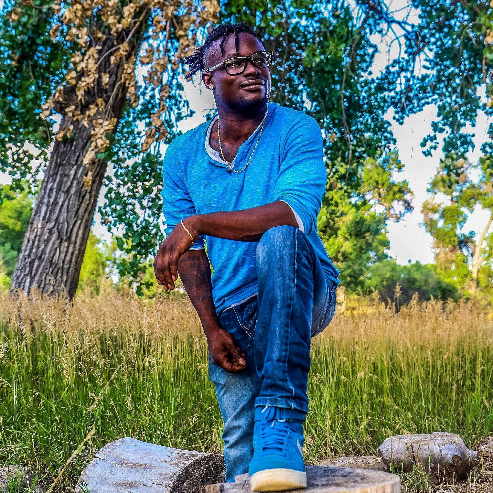
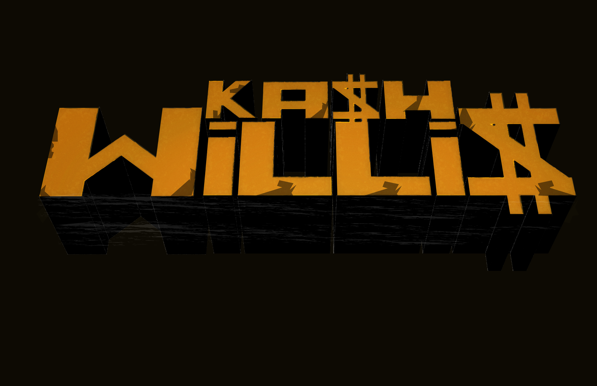

I can design and produce a variety of artwork for print and digital marketing campaigns, branded collateral, and other promotional materials using visually stunning presentations that: effectively communicate key concepts, brand messaging, and creative ideas. Experience in graphic and web design, digital marketing, social media, UX/UI, storyboarding, HCI, prototyping, and (A/B) usability testing. By leveraging case studies, competitive audits, and wireframes: I aim to create highly enjoyable, accessible, and user-friendly products, apps, and websites that cater to the needs of users across different screen sizes. (design user experiences for websites, mobile apps, and other digital touchpoints.)


Contributed over 125 hours of volunteer service @The Butterfly Pavillion across 19 months, supporting
educational outreach and brand visibility through creative design projects.
Completed 10 design initiatives, including:
A custom table tent for Westin Hotels & Resorts, promoting conservation partnerships
A promotional poster for the Annual Butterfly Quest event, enhancing public
engagement
A series of gift shop buttons featuring diverse tarantula species, categorized by family,
genus, and species to support educational merchandising
Collaborated with staff and stakeholders to ensure visual materials aligned with
organizational goals and scientific accuracy.
Demonstrate attention to detail, creativity, and commitment to environmental education
through impactful visual storytelling.
.png)
.png)